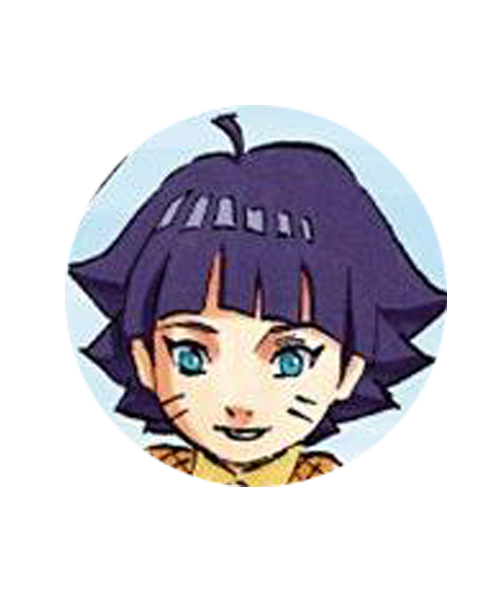
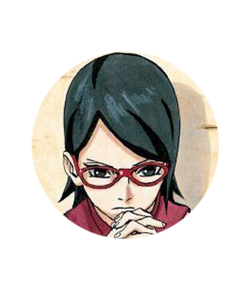
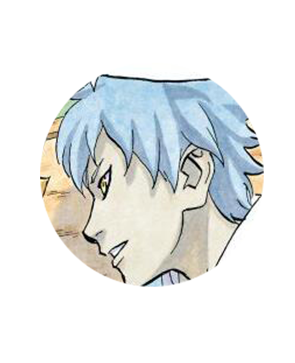
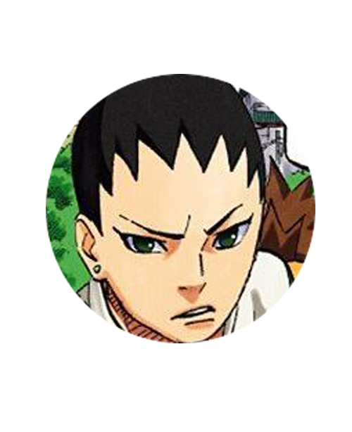
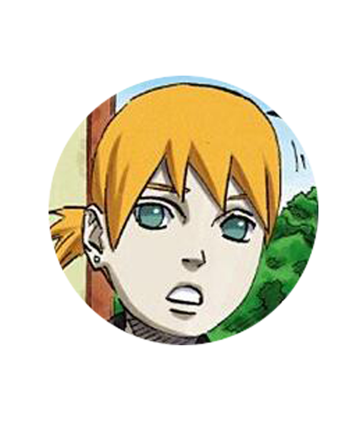
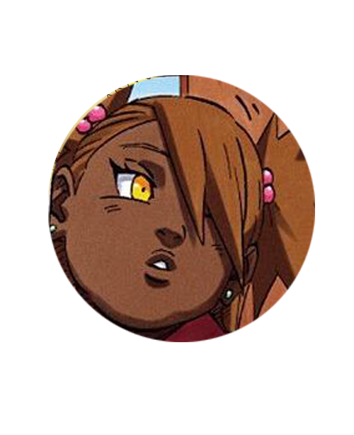

配音 [日]三瓶由布子； 鸣人和雏田的儿子，性格好胜，富有忍者才能的少年。 自认天赋过人强于父亲，却被鸣人拜托好友佐助替其调教。 称呼鸣人为“臭老爸”并讨厌着他，扬言将来唯独不要成为火影。
配音 [日]早见沙织； 鸣人和雏田的女儿，有着隐性白眼。 向日葵继承了母亲雏田的相貌和性格，尽管还年幼却十分懂事。 非常仰慕自己的哥哥。
配音 [日]菊池心； 佐助和小樱的女儿，已经开启了写轮眼。 博人的战友。尊敬着身为火影的鸣人。 另一方面，由于几乎没有和父亲佐助在一起过，而怀着复杂的感情。
配音 [日]木岛隆一； 从外地来到进入木叶的忍者学校。 与博人及佐良娜组成三人小队的少年，自称父亲是大蛇丸。 毕业晋升为下忍后，与博人、佐良娜同队，由木叶丸担任指导上忍。
配音 [日]小野贤章 ； 鹿丸和手鞠的儿子。 既继承了父亲怕麻烦的性格，也继承了母亲不服输的性格。 沉着冷静，与蝶蝶、井阵同队，成为新一代的“猪鹿蝶”。
配音 [日]阿部敦； 性格冷静，佐井和井野的儿子。 相貌俊美，认真、聪明。就读于木叶隐忍者学校。 与博人、佐良娜、巳月、鹿戴、蝶蝶等人为同期学员。
丁次和卡鲁伊的女儿。 贪吃的性格遗传自父亲，棕色肤色性格则是遗传自母亲 与鹿代、井阵同属萌黄班，是第17代的“猪鹿蝶”。